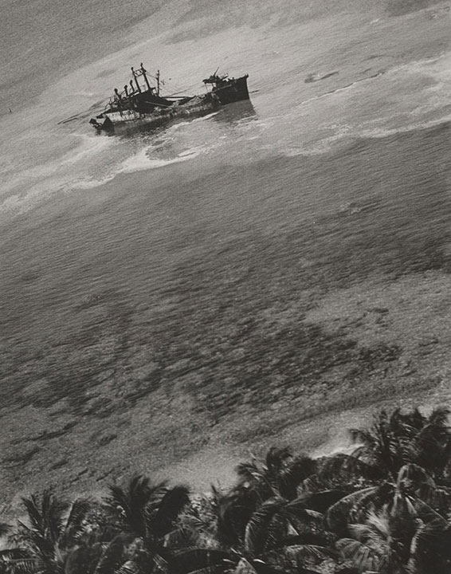

W. Eugene Smith
, United States 1918–1978.
Smashed remains of Jap cargo vessel broken in half by dive bombers at Eniwetok Atoll on January 30, 1944
. Gelatin silver print. W. Eugene Smith Archive 82.102.70. © The Heirs of W. Eugene Smith